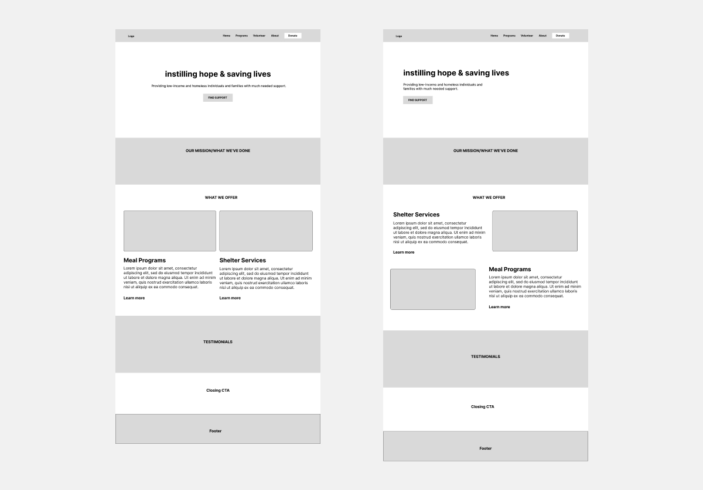

Research
During the first few hours of the event, the founder of DCMH was there at the event, tabling for hackers to ask any clarifying questions. Due to this, my team came together to come up with a set of questions to ask regarding the goals DCMH had, its visual branding, and user experience of the website
- What are the organization values, mission, and goals?
- Are there any specific campaigns or initiatives DCMH wants to highlight?
- Who are your primary target audiences?
- What do you think are the strengths and weaknesses of your current website?
- Are there any feedback from users that you have received regarding the website?
From asking these types of questions, we were able to find out that the people who use DCMH as a support organization, does not know that they also provide support in housing. DCMH also mentioned that users find it hard to donate. Due to this, DCMH wanted to a better way to emphasize their housing support services, and making it easier to donate while updating their branding to show community, hope, and compassion.
Ideation & Design
My primary focus was on reimagining the CourseAssist AI landing page to create a stronger initial impact, and ultimately drive higher conversion rates. This involved exploring various layouts, ensuring responsiveness across different devices, and strategically refining key calls to action.
The Redesign
We were able to redesign key pages, focusing on the landing page, donating, and the suport services DCMH provides.
Rebranding
We simplified the brand colors to two primary and two secondary colors, incorporating blue and pink to evoke a sense of trustworthiness, safety, and human kindness. This helps create contrast and balance on the website.
The logo typeface, Righteous, has personality in its "M", which was used in the new logo. For the body content, we choose Outfit for the headers, and Cabin for the body text to create a well-balanced appearance.
Landing page
The new landing page has a more organized information hierarchy with clear visual branding. It also shows what types of support services DCMH offers, while the previous one lacked that information in the landing page.
Before
After
Donate page
The new donate page has more visual elements to pair with the text, and clearly tells the visitor the ways they could donate through cards.
Before
After
Support page
The new support page gives visitors clear steps on what they should do if they need support in shelter and/or meals. It also explains what programs DCMH offers.